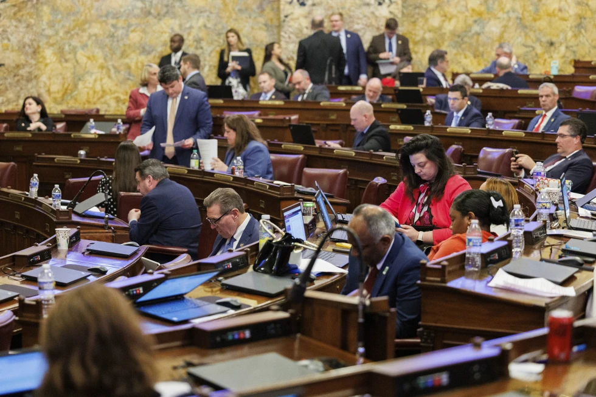

Pennsylvania tasarısı kapsamında tüketiciler yapay zeka tarafından üretilen içerik hakkında bilgilendirilecek
Pennsylvania’daki tüketiciler, yapay zeka tarafından içerik oluşturulduğunda bilgilendirilecek ve sanıklar, Meclis’in Çarşamba günü kabul ettiği bir yasa tasarısına göre, yapay zeka tarafından oluşturulan çocuk cinsel istismarı materyalinin yasadışı olmadığını iddia edemeyecek.

Tasarının ana sponsoru Temsilci Chris Pielli, tüketicileri korumak için yapay zeka kullanımının etrafına korkuluklar yerleştirmek üzere tasarlandığını söyledi.
Chester County’den bir Demokrat olan Pielli, kürsüde yaptığı konuşmada “Bu tasarı basit” dedi. “Eğer bu yapay zeka ise, yapay zeka olduğunu belirtmek zorunda. Alıcı dikkatli olmalı.”
Milletvekilleri 146-54 oyla tasarıyı değerlendirilmek üzere Eyalet Senatosuna gönderdi. Tüm Demokratlar lehte oy kullanırken, Cumhuriyetçiler kabaca ikiye bölündü. Tasarı, yazılı metin, görüntü, ses veya video oluşturmak için yapay zeka kullanıldığında “açık ve göze çarpan bir açıklama” gerektirecek şekilde eyaletin Haksız Ticaret Uygulamaları ve Tüketiciyi Koruma Yasasını değiştirecek. Bildirimin, içerik tüketicilere ilk gösterildiğinde gösterilmesi gerekecektir. İhlal edenlerin yapay zeka içeriğini bilerek ya da umursamadan yayınlaması gerekecek ki Pielli bunun farkında olmadan yapay zeka içeriği yayınlayan haber kuruluşlarının korunmasına yardımcı olacağını söyledi.
Pennsylvania Ticaret ve Sanayi Odası, işletmeleri hukuk davalarına maruz bırakabileceği ve aldatıcı materyallerle sınırlı kalmayacağı gerekçesiyle tasarıya karşı çıkıyor. Bir oda sözcüsü, grubun özellikle tasarının tüketici bildirimi kısmına karşı olduğunu söyledi.
Tasarının bir başka hükmü, sanıkların yapay zeka tarafından yaratılan çocuk cinsel istismarı materyalinin ceza yasaları kapsamında yasadışı olmadığını savunmasını yasaklıyor.
Yapay zekanın kullanımının kamuya açıklanması, ABD yasama organlarında yeni teknolojiyi düzenlemeye çalışan yüzlerce eyalet tasarısında ortaya çıkan bir temadır.
YZ, iş ve kiralama başvurularını filtreliyor, bazı durumlarda tıbbi bakımı belirliyor ve sosyal medyada büyük kitleler bulan görüntülerin oluşturulmasına yardımcı oluyor, ancak şirketlerin veya yaratıcıların YZ’nin kullanıldığını açıklamasını gerektiren çok az yasa var. Bu durum, hayatın her köşesine yayılsa bile Amerikalıları teknoloji hakkında büyük ölçüde karanlıkta bıraktı.
TechNet Pennsylvania ve Orta Atlantik İcra Direktörü Margaret Durkin, Çarşamba günü yaptığı açıklamada, kuruluşunun “kimin ve neyin etkilendiğine dair belirsizliği azaltmak için” YZ’nin tanımı konusunda kanun yapıcılarla birlikte çalışmayı beklediğini söyledi. TechNet, Meta ve Google gibi teknoloji şirketleri için lobi yapan üst düzey yöneticilerden oluşan bir ticaret grubudur. Sözcü Steve Kidera, grubun karşıt bir konumdan tarafsız bir konuma geçmek için kanun yapıcılarla birlikte çalışmayı umduğunu söyledi.
Küresel yazılım endüstrisini savunan Washington, D.C. merkezli BSA The Software Alliance, Şubat ayı başı itibariyle yaklaşık 40 eyalet yasama organında bekleyen YZ ile ilgili birkaç yüz yasa tasarısı olduğunu söyledi. Yasa tasarılarının kapsadığı konular arasında önyargı ve ayrımcılık riski ve deepfakes yer alıyor.
Kaynak: AP News
Resim: Pennsylvania state representatives held a voting session on Wednesday, April 10, 2024, in the state Capitol in Harrisburg, Pennsylvania. The House voted 146 to 54 to send the Senate a bill to require that consumers be notified when artificial intelligence has been used to generate content. (AP Photo/Mark Pynes)